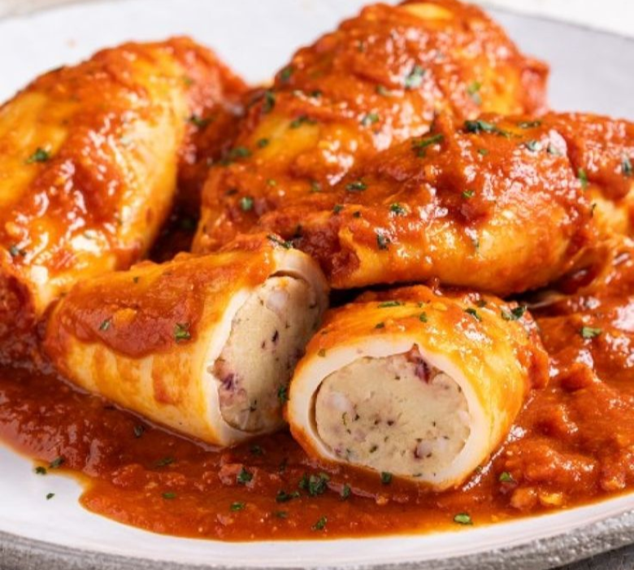
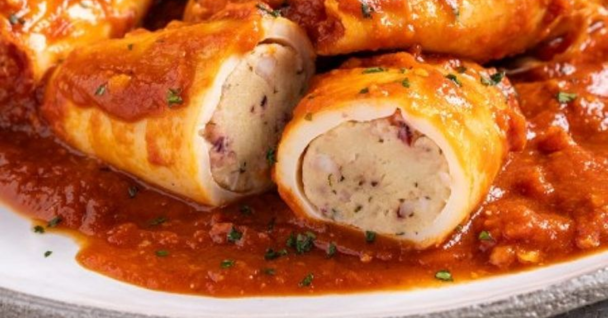

Secondi piatti
Calamari ripieni:
- calamari (medi)
- 3 spicchiaglio
- q.b.sale e pepe
- q.b.olio extravergine d’oliva
- 1 ciuffoprezzemolo
- 250 gpomodorini (maturi)
- 200 gpangrattato (grossolano)
- q.b.vino bianco
- 80 golive nere (denocciolate)
- 2 cucchiaicapperi (dissalati)
- 6 filettiacciughe sott’olio


Procedimento:
- Pulire i calamari: staccare la testa, svuotare le sacche, eliminare la cartilagine, il becco e, lavandoli sotto acqua corrente, togliere la pelle. Tagliare gli occhi, sciacquali ancora e sistemarli in uno scolapasta.
- Tritare non molto finemente alcuni tentacoli e le alette laterale dei calamari.
- In una padella versare un filo di olio evo, far rosolare uno spicchio di aglio, unire il trito di tentacoli e cuocerli a fuoco vivo per pochi minuti.
- Regolare di sale e pepe e sfumare con un po’ di vino bianco
- In una ciotola versare il trito di tentacoli con il liquido di cottura e unire i capperi dissalati, le olive denocciolate tagliate a pezzettini, le acciughe sminuzzate, il prezzemolo e l’aglio tritati, il pangrattato, regolare di sale e pepe e amalgamare il tutto.
- Riempire i calamari, chiuderli con uno stecchino, adagiarli in una teglia e posizionare i tentacoli vicino alle sacche. Bucherellare le sacche con uno stecchino
- Aggiungere i pomodori lavati e divisi a metà, i capperi, le olive, lo spicchio di aglio schiacciato, il prezzemolo e distribuire un generoso filo di olio. Regolare di sale se necessita
- In una ciotola mescolare del pangrattato con un po’ di olio e sale e distribuirlo sui calamari
- Cuocere in forno già caldo a 180°C per circa 15/20 minuti
- Servire i calamari ripieni subito. Meglio non scaldare